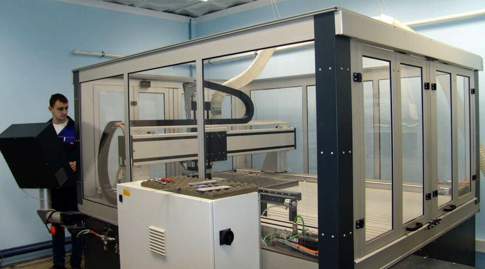
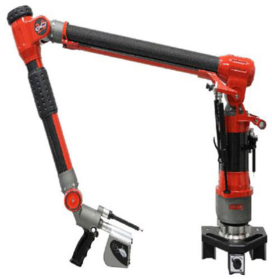
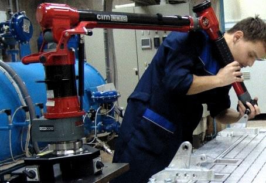

Станок с числовым программным управлением
производитель: imes-icore GmbH
Тип управления - следящий, с обратной связью по положению.
Беззазорные прецизионные стальные направляющие качения.
Стойка с ЧПУ Heidenhein TNC 320.
Разработка программ для обработки деталей на станке выполняется в CAM системе PowerMILL.
| Основные технические характеристики | |
|---|---|
| Повторяемость, мм | ±0,02 |
| Рабочая зона, мм | 1180/1980/200 |
| Максимальная подача, м/мин | 18 |
| Размер рабочего стола, мм | 1500х2400 |
| Высота обрабатываемого материала, мм | 100 |
| Мощность шпинделя, кВт | 2,6 |
| Максимальная частота оборотов инструмента, об/мин | 40 000 |
| Точность обработки, мм | ±0,01 |
Координатно-измерительная машина (типа «рука»)
производитель: Hexagon Metrology
Возможности:
измерение поверхностей сложного профиля методом сравнения детали с компьютерной моделью;
измерение пространственных геометрических тел и плоских фигур;
измерение углов, радиусов изгибов труб;
сканирование кривых с деталей для построения компьютерной модели (обратный инжиниринг);
сканирование поверхностей (создание "облака точек").
Координатно-измерительная машина оснащена лазерной сканирующей головкой Perceptron V3 ScanWorks.
Обработка данных измерений выполняется в программе PowerINSPECT.
, | Основные технические характеристики | |
|---|---|
| Диапазон рабочих температур, °С | 10-40 |
| Погрешность при Т 20°С ± 3,3 °С | |
| измерений точки в пространстве, мм | ±0,02 |
| измерений длины в пространстве, мм | ±0,029 |